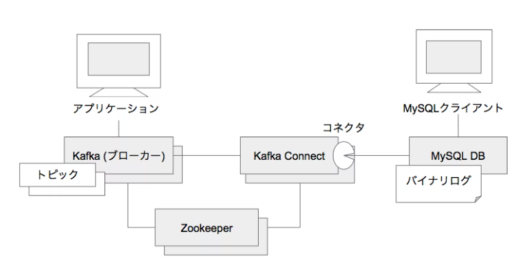
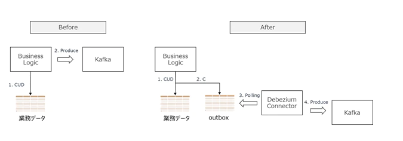
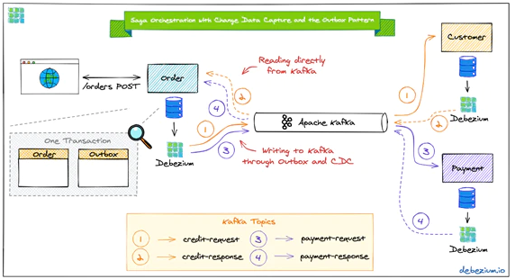

Debezium¶
1．Debeziumとは¶
DebeziumはDBに対するデータ操作をキャプチャしてイベントストリームに変換してくれる分散プラットフォームであり、2016年初頭から、RedHat主導で開発されている。もともと、マイクロサービスを実装するためのソリューションとして開発されたもののようだが、マイクロサービスに関係なく使える。Apache Kafkaをベースに実装されており、Kafka Connectベースのコネクタを利用してDBをモニターすることができる。 既存DBに対するデータ操作をKafkaのメッセージに変換することができるため、レガシーシステムなどでアプリケーションに手を入れたくないがデータだけ抜き出してリアルタイム処理したいなど、別システムにデータを流用したいという場合に便利なソフトウェアである。 また、イベントログはKafkaが保持してくれているため、データを利用する側(consumer)が止まってもイベントログが失われることはなく、consumerを復旧させれば処理を再開することが可能である。MySQL、MongoDB、PostgreSQL、Oracle、SQL Serverに対応している。

{kind=link}
2. 特徴¶
DBMSは、変更内容をトランザクションログに記録していく。MySQLの場合は、バイナリログである。それをKafka Connectサービスがコネクタを使用して監視する。変更を検知すると、テーブル単位で作成されたKafkaトピックに、変更内容を「イベント」としてJSONでシリアライズして記録する。アプリケーションはKafkaのコンシューマなどを使ってKafkaメッセージブローカーに接続し、トピックを監視する。変更イベントが到着したら受信して、アプリケーションの他の処理に利用する。
3. RDB＋Debezium＋Kafka¶
マイクロサービスで複数のサービスにまたがってデータ更新する際は、各サービスにおいてデータソース（RDB）の更新と、その更新内容を他のサービスに通知するという処理が必要である。 このデータ更新と他サービスへの通知に結果整合性を持たせる１つの方法は、DBへの更新データをキャプチャするための分散プラットフォームであるDebeziumを利用して、Transactional Outboxパターンを構築することである。
Transactional Outboxパターンでは、RDBに業務データのテーブルと、通知用のoutboxテーブルを用意して、両方のテーブルを1つのトランザクションでアトミックに更新する。Debeziumはoutboxテーブルの変更を検知して、それをKafkaのTopicに送信・通知します。つまり、アプリはRDBのみを更新し、メッセージ送信はDebeziumがRDBの変更を捕捉して行う事で、結果整合性を確保する仕組みである。

{kind=link}
4．サンプル構築¶
実際に PostgreSQL＋Debezium＋Kafkaを用いたSagaパターンのサンプルを構築して、動作を検証する。
この構成の構築例がGitHubに公開されているため、それを利用する。 https://github.com/debezium/debezium-examples/tree/master/saga
サンプルの処理内容としてはフロントエンドとしてOrderサービスがクレジット支払いの注文を受け付け、バックエンドサービスであるCustomerサービスとPaymentサービスとでそれぞれユーザ情報の更新と決済情報の更新をする、というものある。
出典：https://github.com/debezium/debezium-examples/blob/master/saga/solution-overview.png
環境構築の前提条件はmavenとdocker-composeがインストールされていることである。
この例の中で重要な要素となるのは２つある。１つはJavaで実装されたビジネスロジック側のライブラリで、もう１つはDebeziumのKafka Connectorである。
{kind=link}
{kind=link}
debezium-quarkus-outboxライブラリ
Javaで実装されたビジネスロジック側では、debezium-quarkus-outboxというライブラリを使用している。このライブラリは、他サービスへの通知をする機能と、通知を受け取る機能を提供している。 他サービスへの通知をする機能として、監視対象のテーブル（業務データのテーブル）に対してCUD(Create/Update/Delete)操作が加えられた際に、その操作内容をJavaプログラムから指定されたテーブルであるoutboxeventテーブルにも同時に書き込む際の処理が実装されている。 加えて他サービスからの通知をKafka経由で受け取る機能も実装されており、このサンプルでは、バックエンドサービスである、決済情報の記録を模擬するPaymentサービスと、顧客の与信情報の記録を模擬するCreditサービスからそれぞれレスポンスを受け取っている。
Debezium Documentation>Integrations>Outbox Quarkus Extension: https://debezium.io/documentation/reference/integrations/outbox.html
order-service/src/main/resources/application.propertiesがこのライブラリの設定ファイルである。オプション内容はリンク先で確認できる。 https://debezium.io/documentation/reference/integrations/outbox.html#_configuration
order-service/src/main/resources/application.properties quarkus.datasource.db-kind=postgresql quarkus.datasource.jdbc.url=jdbc:postgresql://localhost:5432/orderdb quarkus.datasource.username=orderuser quarkus.datasource.password=orderpw quarkus.hibernate-orm.log.sql=true quarkus.hibernate-orm.database.generation=drop-and-create # quarkus.hibernate-orm.database.generation=update quarkus.hibernate-orm.database.default-schema=purchaseorder quarkus.log.level=INFO quarkus.log.min-level=INFO quarkus.log.console.enable=true quarkus.log.console.format=%d{HH:mm:ss} %-5p [%c] %s%e%n quarkus.debezium-outbox.remove-after-insert=false mp.messaging.incoming.paymentresponse.connector=smallrye-kafka mp.messaging.incoming.paymentresponse.topic=payment.response mp.messaging.incoming.paymentresponse.bootstrap.servers=localhost:9092 mp.messaging.incoming.paymentresponse.group.id=order-service mp.messaging.incoming.paymentresponse.key.deserializer=org.apache.kafka.common.serialization.StringDeserializer mp.messaging.incoming.paymentresponse.value.deserializer=io.debezium.examples.saga.order.facade.serdes.PaymentDeserializer mp.messaging.incoming.paymentresponse.interceptor.classes=io.opentracing.contrib.kafka.TracingConsumerInterceptor mp.messaging.incoming.creditresponse.connector=smallrye-kafka mp.messaging.incoming.creditresponse.topic=credit-approval.response mp.messaging.incoming.creditresponse.bootstrap.servers=localhost:9092 mp.messaging.incoming.creditresponse.group.id=order-service mp.messaging.incoming.creditresponse.key.deserializer=org.apache.kafka.common.serialization.StringDeserializer mp.messaging.incoming.creditresponse.value.deserializer=io.debezium.examples.saga.order.facade.serdes.CreditDeserializer mp.messaging.incoming.creditresponse.interceptor.classes=io.opentracing.contrib.kafka.TracingConsumerInterceptor # Tracing configuration quarkus.jaeger.service-name=order-service
Debezium Connector
DebeziumのKafka Connectorについてどのように動いているか確認する。この設定は３つのサービスで類似であるためOrderサービス向けの設定ファイルであるregister-order-connector.jsonだけ見てみると、以下のようになっている。
register-order-connector.json { "connector.class": "io.debezium.connector.postgresql.PostgresConnector", "tasks.max": "1", "database.hostname": "order-db", "database.port": "5432", "database.user": "orderuser", "database.password": "orderpw", "database.dbname" : "orderdb", "database.server.name": "dbserver1", "schema.include.list": "purchaseorder", "table.include.list" : "purchaseorder.outboxevent", "tombstones.on.delete" : "false", "key.converter": "org.apache.kafka.connect.storage.StringConverter", "value.converter": "org.apache.kafka.connect.storage.StringConverter", "transforms" : "saga", "transforms.saga.type" : "io.debezium.transforms.outbox.EventRouter", "transforms.saga.route.topic.replacement" : "${routedByValue}.request", "poll.interval.ms": "100" }ポーリングするDBへのアクセス情報やKafka Connectorとしての設定情報が書かれている。注目する点は、Produce先となるKafkaのトピック名である。${routedByValue}となっており、これはoutboxテーブルのaggregateTypeで変数指定され、outboxへINSERTされたデータの内容によってProduceされるKafkaへのトピックが変わる。